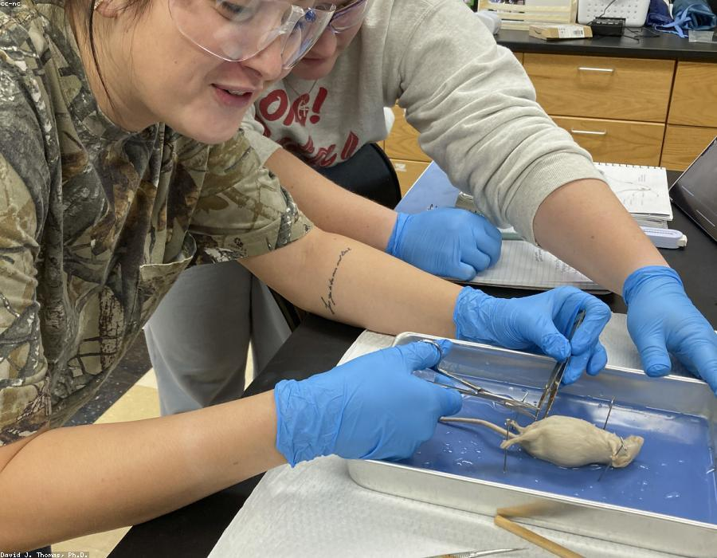

A Presentation
Worth the Screen It's On
Built with html-slide — layouts × themes × an edit mode
A standard slide is a heading and a body
Everything else is a layout class away
This is layout-std: a .slide-head on top and a flexible
.body below. Body text is 34px on a 1920×1080 canvas, which reads
comfortably from the back of a seminar room.
- Emphasis with strong for weight, .em for colour — keep the coloured one rare.
- Asides and labels go in .muted grey, never body copy.
- List items can appear step by step with
data-fragment.
.callout holds the one sentence you want remembered.Section dividers give a deck rhythm
One per chapter; the audience gets a breath, you get a transition line.
Two columns
TEXT SIDE
Columns are plain flex children. Add .is-narrow or
.is-wide to break the 50/50 split.
Keep one idea per column — if both columns argue the same point,
this should have been layout-std.
Cards nest anywhere
A .card is the general-purpose grouped box.
.is-accent highlights the one that matters.
The highlighted one
Use at most one accent card per slide.
When the figure is the slide
layout-figure puts the graphic first and the words second.
The aside is for reading the figure: what to look at, and what it means.
Before / after, ours / theirs
The usual way
- Point about the status quo
- Its hidden cost
- Why it persists anyway
The proposed way
- What changes
- What it costs
- What you get back — revealed on cue
Three parallel points
Speed
Cards wrap in a grid; three across by default,
.is-two-up for two.
Clarity
Each card is one claim with one line of support. More than that belongs on its own slide.
Honesty
If you only have two real points, use two cards. Padding to three shows.
Pipelines and headline numbers
- Collect
where the data comes from - Model
what happens to it - Validate
why you believe the result - Report
this deck
Charts without a chart library
bar / line / donut, drawn as theme-aware SVG from inline JSON
One data-chart attribute; "highlight" dims everything but the bar you are talking about.
Colors track the theme — switch themes and the charts follow.
A cover over a full-bleed image
layout-hero — any image in .media goes full-bleed; the panel keeps the title readable.
Half media, half words
layout-split works as a cover, a section break, or a content slide. .is-media-right flips it.
What the next 15 minutes hold
The problem
why the current way costs more than it looks
The approach
one idea, three consequences
The evidence
what we measured and what moved
What's next
the ask, in one slide
A process the audience can walk
Collect
where the input comes from
Refine
what we throw away, and why
Decide
the rule that picks a winner
Deliver
what the user finally sees
.takeaway pins the conclusion to the bottom of any slide — the line people photograph.Milestones on a line
- 2023
Prototype
A weekend script that refused to die.
- 2024
First users
Three labs, one shared spreadsheet.
- 2025
Rebuild
The version we don't apologize for.
- 2026
Today
Where this talk picks up.
The people behind it
A. Researcher
Replace .avatar with an <img>; it crops to a circle either way.
B. Engineer
One line each — a team slide is a courtesy, not a biography.
C. Designer
Three to five people fit; beyond that, use two rows of smaller cards.
Facts in label/value rows
- Project
- html-slide
- Started
- 2026
- Stack
- HTML + CSS + a small Node dev server — no dependencies
- Scope
- Layouts × themes, presenter console, edit mode, PDF/PNG export
Why a .spec list
Company overviews, dataset cards, experiment settings — anything that is really a table of two columns reads better as labelled rows.
Four quadrants, one decision
Plan carefully
Worth it, but budget the pain.
Do first
The quadrant this slide exists to point at.
Skip
Expensive and forgettable.
Batch later
Cheap, so save it for a slow week.
One slide, one claim —
said plainly enough to disagree with.
layout-message is for the sentence the whole deck argues. If it needs a chart, it isn't this slide.
Three tiers, one obvious pick
Light
- Core features
- Email support
Standard
- Everything in Light
- Priority support
- The feature people actually pay for
Enterprise
- Everything in Standard
- SSO / audit logs
- A human who answers the phone
Who does what, and when
.gantt is a grid: --gantt-cols sets the periods, each bar picks its grid-column.Where the audience leaks out
- Visited 12,400
- Signed up 3,100
- Activated 1,150
- Paid 240
- Renewed 180
Do this, not that
DO
- One claim per slide, stated in the title
- Numbers with their source attached
- A conclusion band the room can photograph
DON'T
- Paragraphs nobody will read aloud
- A legend with eleven colors
- "Sorry, this slide is a bit busy"
Three photos, three captions
.gallery crops every image to the same box.
object-fit: cover does the rest..is-two-up switches to two larger tiles.Who reports to whom
- Method2 people
- Platform3 people
- Analysis2 people
- Field4 people
A table that already made the decision
| Tool A | Ours | Tool B | |
|---|---|---|---|
| Setup time | 2 days | 10 min | half a day |
| Runs offline | — | ✓ | ✓ |
| Edits in git | — | ✓ | — |
| Price | ¥50k/yr | free | ¥120k/yr |
.is-highlight on the cells lifts one column; tr.is-highlight does the same for a row.
A headline number can be the whole slide — layout-message with a .stat scaled up.
A history with more beats
- 2019
Idea
Sketched on a whiteboard.
- 2021
Funding
Enough to hire two people.
- 2022
Launch
Version one, warts included.
- 2024
Pivot
The customers decided for us.
- 2026
Scale
.is-altalternates entries above and below the line.
Four phases, one direction
Discover
interviews & audit
Define
scope the real problem
Deliver
build → pilot → fix
Scale
every team, same playbook
.phases band reads left to right — the chevrons do the "then" for you.What rests on what
- Visionwhere this is going
- Strategythe three bets
- Practiceweekly rituals
- Foundationtools, data, trust
A .pyramid stacks up to four layers, widening downward — the classic "it all rests on the base" figure.
Layers lighten toward the top automatically; put the thing you want remembered at the bottom.
Where two circles overlap
ask for
says they do
A loop, not a line
Plan
pick one bet
Do
smallest real version
Check
numbers, not vibes
Act
keep / kill / double
cadence
Three views, one slide
The problem
CSS-only tabs — radio inputs, no JavaScript — so they work live while presenting and survive a static export showing the checked tab.
The approach
Click the tab headers during the talk instead of paging through three near-identical slides.
The result
Answers on demand
Does this work without the dev server?
Yes — details.reveal is native HTML. Click to open and close
while presenting; exports show whatever state you left it in.
When is this better than fragments?
Fragments reveal in a fixed order. A Q&A slide wants random access — open only the question the audience actually asked.
How many per slide?
Three to five. Beyond that it's a document, not a slide.
Hover to turn the card over
Question 1
What does a .flip hide on the back?
Answer
Anything — text, a stat, a photo. It flips on hover.
Question 2
When is a flip card the right move?
Answer
Quiz beats, reveals, before/after pairs — anywhere suspense helps.
Question 3
And in a PDF export?
Answer
The front face prints — treat the back as a live-only bonus.
One screen of everything
North star
A .bento is a 4-column grid; .is-big, .is-wide and .is-tall make tiles span.
Uptime
NPS
Adoption
72% of teams onboarded
Churn
Ship rate
Numbers that move when you arrive
data-countup and .meter[data-value] animate every time the
slide becomes active (via core/effects.js); exports render the final state.
Code in a window, keys in kbd
<section class="slide layout-std">
<header class="slide-head">
<h2>One slide is one element</h2>
</header>
<div class="body">…</div>
</section>
A .window wraps code or a screenshot in app chrome — the traffic
lights say "this is software" faster than any caption.
Shortcuts read as keys: press e to edit, o for overview, ⌘S to save.
Let the users say it
.bubbles make a dialogue — .is-right moves the tail,
.is-accent marks the reply."
Frosted glass over a photo
.hero-panel.is-glass blurs what's behind it; .gradient-text runs accent → accent-2.
Before the change, after the change
導入前
- Deck lives in one person's head
- Every edit is an email round-trip
- "Final_v7_FIXED_2.pptx"
導入後
- Deck lives in git, next to the code
- Edits are commits with authors
- One file, one history
The slide is not the talk; it is the thing the talk points at.
— someone who sat through too many bullet lists
Thank you
questions welcome · yourname@example.org